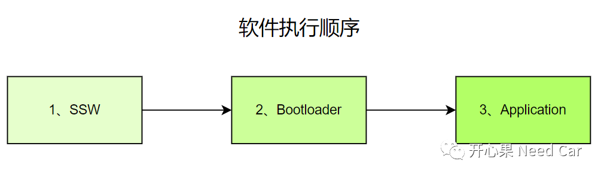
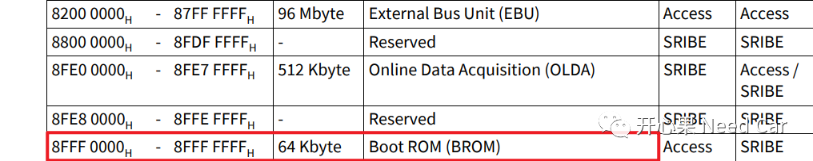
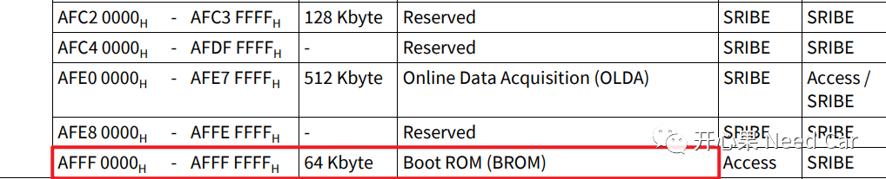
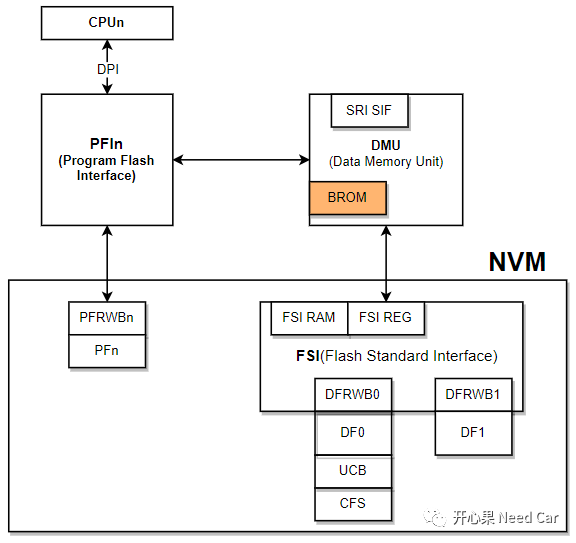
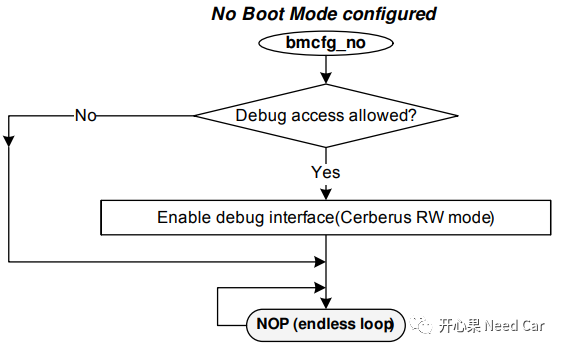
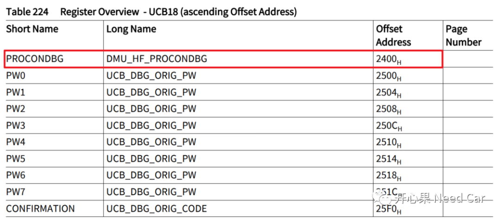
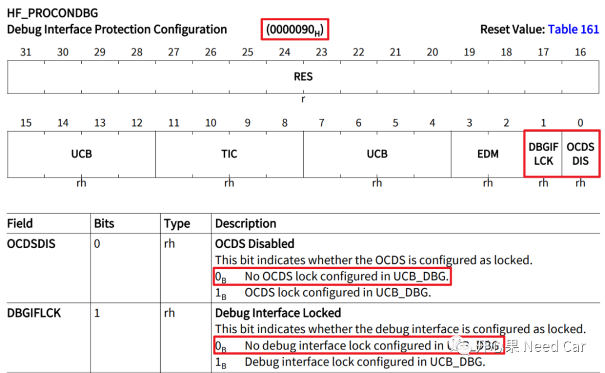
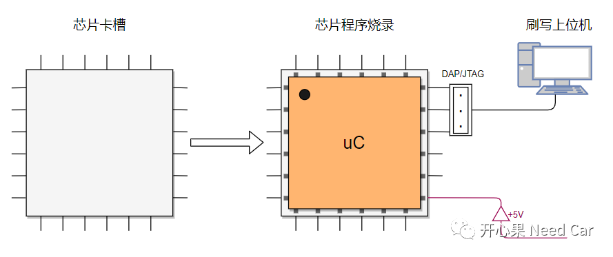
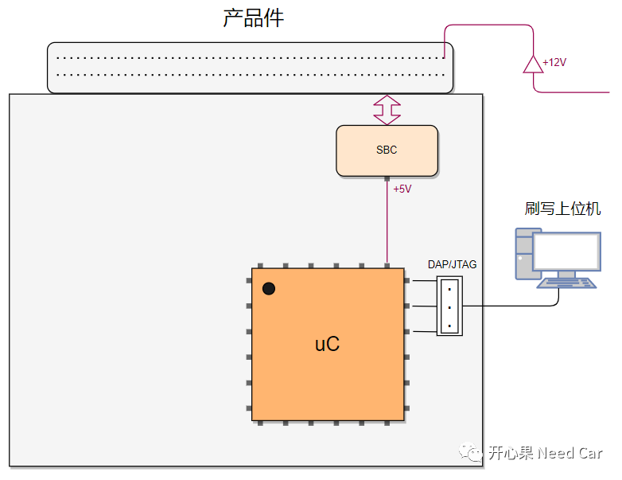
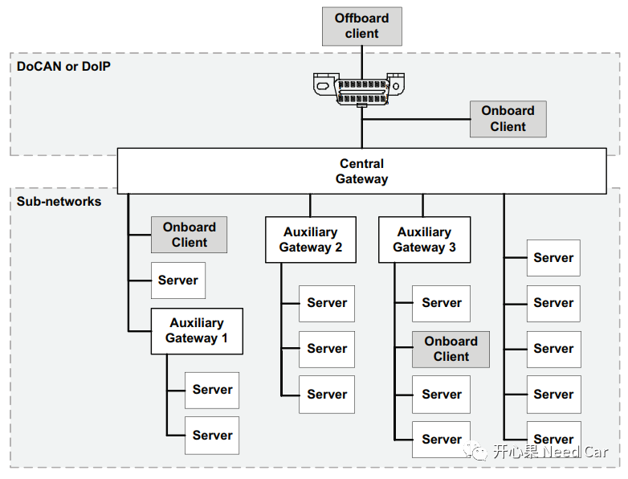

开心果 Need Car · 2022-10-12T20:05:00+08:00 · 微信原文
1、BootROM
2、Debug Interface
3、工厂如何给"裸"芯烧录程序
提示：本文以Aurix tc3xx为例

1、BootROM地址空间
Cached方式访问，BootROM所在的地址空间如下所示：

No-Cached方式访问，BootROM所在的地址空间如下所示：


2、SSW（Startup Software）作用
既然SSW是程序复位后执行的第一段程序，该程序的主要作用是什么呢？答：确定用户设置的启动流程。SSW又是依据什么确定用户的启动流程呢？答：Boot Mode Header（BMHD）,对于英飞凌Aurix TC3xx平台，用户可以设置4个BMHD，以及4个备份BMHD。BMHD的格式固定不变，如下所示：
Field Name | Subfield | Description |
| BMI | Boot Mode Index - 16 bit | |
| PINDIS bit [0] | Mode selection by configuration pins: 0B Mode selection by HWCFG pins is enabled 1B Mode selection by HWCFG pins is disabled | |
| HWCFG bits [3:1] | Start-up mode selection: 111B Internal start from Flash 110B Alternate Boot Mode (ABM) 100B Generic Bootstrap Loader Mode (ASC/CAN BSL) 011B ASC Bootstrap Loader Mode (ASC BSL) else invalid | |
| LSENA0 bit [4] | Lockstep monitoring control by SSW for CPU0: 0B Lockstep monitoring for CPU0 is disabled 1B Lockstep monitoring for CPU0 is enabled | |
| LSENA1 bit [5] | Lockstep monitoring control by SSW for CPU1: 0B Lockstep monitoring for CPU1 is disabled 1B Lockstep monitoring for CPU1 is enabled | |
| LSENA2 bit [6] | Lockstep monitoring control by SSW for CPU2: 0B Lockstep monitoring for CPU2 is disabled 1B Lockstep monitoring for CPU2 is enabled | |
| LSENA3 bit [7] | Lockstep monitoring control by SSW for CPU3: 0B Lockstep monitoring for CPU3 is disabled 1B Lockstep monitoring for CPU3 is enabled | |
| LBISTENA bit [8] | LBIST execution start by SSW: 0B LBIST execution start by SSW is disabled 1B LBIST execution start by SSW upon cold power-on is enabled | |
| CHSWENA bits [11:9] | Checker Software (CHSW) execution after SSW: 101B CHSW execution after SSW is disabled else CHSW execution after SSW is enabled | |
| reserved bits [15:12 | Reserved for future extensions, must be configured to 0 in UCB_BMHDx | |
| BMHDID | -- | Boot Mode Header Identifier - 16 bit: B359H BMHDID OK else BMHDID invalid |
| STAD | -- | Start address (always must be inside PFLASH, word-aligned) - 32 bit: if ABM selected Start address of the Alternate Boot Mode Header if Internal start selected Start address of the user code else not considered for mode selection |
| CRCBMHD | -- | Check result for the Boot Mode Header - 32 bit |
| CRCBMHD_N | -- | Inverted check result for the Boot Mode Header - 32 bit |
SSW评估BMHD的有效性，如果BMHD有效，则程序跳转到BMHD指定的用户启动地址（STAD），这里的启动地址必须在PFlash空间。一般这里会设置Bootloader的入口地址，程序进入Bootloader以后，如果Application程序不更新，程序跳转到Application的主程序（main(()函数处）。之后，就是程序初始化以及程序运行。
但是，芯片刚出厂的时候，处于“空白”状态，BMHD中还没有有效的信息，也没有Application和Bootloader程序，此时，SSW评估所有的BMHD，发现均无效，SSW往哪里跳（Jump）呢？当SSW没有可用的启动模式时，程序只能停留在SSW中。此时，BootROM检查Debug接口是否可以访问（即：调试器连接的DAP或者JTAG接口），如果Debug接口可用，则通过该方式更新程序，否则，SSW程序进入死循环，如下所示：

上一小节提到，当所有的BMHD均无效的时候，SSW无法进入用户代码（User Code），可以通过Debug接口的方式下载User Code到uC中。但是，这里需要Debug接口可用才可以。TC3xx中，Debug的默认接口是使能的吗？答：是的。Debug interface的配置在UCB18中，Debug的使能与否主要由PROCONDBG寄存器决定。UCB18的结构如下所示：


本小节从Tier1的视角，了解一下"裸"芯数据的烧录过程。对于"裸"芯罐装数据的操作方式有两种。
方式一：芯片嵌入专用烧录卡槽
产品开发商从芯片供应商拿到芯片以后，芯片内没有任何用户程序，BMHD中也没有有效信息。产品开发商会通过如下步骤，对芯片进行初次烧录：
1、将芯片放置到专用的"芯片卡槽"内；
2、刷写上位机通过DAP/JTAG将程序刷写到"裸"芯中；
3、之后将芯片焊接到板子上。
示意如下所示：

方式二：通过板子预留的Debug口

对于OEM来说，整车中的每一个件都含有Bootloader，OEM一般不会存在"裸"芯的困扰。OEM更新某个ECU的时候，会通过预留的车载自动诊断接口（OBD：On Board Diagnostics）升级某个ECU，当然，也可以通过OTA升级的方式更新。
不管通过OBD接口，还是OTA方式，升级某个ECU的时候，一般需要经过网关，甚至子网关，方能升级某个终端节点，示意如下所示：

往期精彩回顾